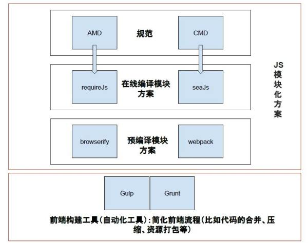

Webpack、Browserify和Gulp三者之间到底是怎样的关系？
TaskRunner：Gulp、Grunt和Make(常见于c/cpp）、Ant、Maven、Gradle（Java/Android）、Rake、Thor（Ruby）一样，都是是Task Runner。用来将一些繁琐的task自动化并处理任务的依赖关系。其中有些是基于配置描述的，描述逻辑比较费劲，比如Ant基于xml。还有些就是代码，比较灵活，个人偏好这种。比如Rake、Thor、Gulp、Gradle。对于Gradle来说也有些蛋疼。因为它本身是Groovy的DSL。如果要深入使用，你还得学一下Groovy语言。其他就好多了Rake、Thor就是写Ruby；Gulp就是JavaScript。相对门槛低很多。模块化解决方案：Browserify It provides a way to bundle CommonJS modules together, adheres to the Unix philosophy（小工具协作）, is in fact a good alternative to Webpack.Webpack takes a more monolithic（整体解决、大而全） approach than Browserify... is relies on configuration.webpack官网有对二者的使用方法进行对比，可以看一下：webpack for browserify users上面这些工具在功能上有交集：代码的Minify、Concat；资源预处理等；其实每个工具的官网上都有对工具的设计思想、要解决的问题、与其他工具的对比。自己摘抄下来，做个表格对比一下。高亮出每个工具独特的特性。这样你就知道什么时候需要用哪个工具了。比如，你的工程模块依赖很简单，不需要把js或各种资源打包，只需要简单的合并、压缩，在页面中引用就好了。那就不需要Browserify、Webpack。Gulp就够用了。反过来，如果你的工程庞大，页面中使用了很多库（SPA很容易出现这种情况），那就可以选择某种模块化方案。至于是用Browserify还是Webpack就需要根据其他因素来判断了。比如团队已经在使用了某种方案，大家都比较熟悉了。再比如，你喜欢Unix小工具协作的方式，那就Browserify。充分了解各种工具、方案，选择合适的和自己需要的。没有绝对的好。优点换了场景也会变成缺点。

参考：
https://www.zhihu.com/question/37020798
https://survivejs.com/webpack/appendices/comparison/